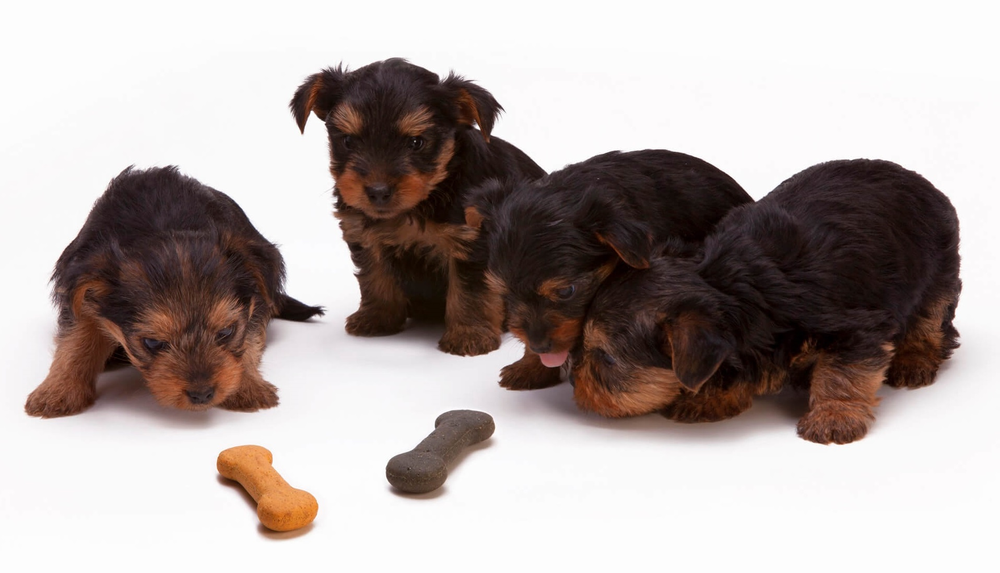

Postat in Iunie 12, 2017 la 11:00 AM
Alimentatia cainelui joaca un rol decisiv pentru starea lui de sanatate, si difera in functie de varsta, nivel de activitate, eventuale alergii sau afectiuni.
Puii pana la 6 luni primesc 3-4 mese pe zi. Dupa sase luni, doua mese pot fi suficiente, dar se recomanda trei. Ca si omul, cainele are o digestie similara si are nevoie o pauza de 15-30 de minute dupa masa. In perioada de crestere, mai ales pana la varsta de un an cainele va manca mai mult, are mai multa energie si are o dorinta de miscare crescuta.
Hrana recomandata: carne (vita, pasare, peste, curcan, iepure), orez, morcov, telina, dovlecel, fructe s.a.
Ce NU are voie: ciocolata, cafea, inghetata, dulciuri, varza, fasole, carne de porc, mancare condimentata, alune, alcool, oase de pasare, porc sau oaie sau organe interne crude. Nu este indicat (adica in cantitati foarte mici sau deloc) sa i se ofere mancare care poate fermenta, cum ar fi: fasole, mazare, cartofi, varza. Nu sunt indicate nici prajelile, sosurile sau pastele fainoase.
Cantitatea de hrana difera de la individ la individ. Aceasta difera in functie de varsta, nutrienti, nivelul de energie, starea fizica (gestatie). Pentru a vedea cat mananca ii puneti un castron cu mancare si daca nu mananca tot la urmatoarea masa se pune mai putin si tot asa. Daca il obisnuiti cu un tip de mancare este bine sa nu il treceti imediat pe alt tip de mancare sau alta marca. Trecerea trebuie facuta in cel putin cateva zile in care mancarea cea noua se introduce treptat din ce in ce mai mult la masa.
Mancarea gatita sau "boabe"?
Daca nu aveti timp sa gatiti zilnic pentru companionul vostru, o puteti face mai rar. Se pot gati cantitati mai mari, portionate si depozitate in frigider. Boabele si mancarea la plic sau conservele sunt bune daca au in compozitie tot ce cainele are nevoie zilnic. Fiti atenti la ingrediente, procentajul carnii din granule si alte surse de vitamine sau minerale.
Pentru a va oferi si mai multe informatii despre hrana si nutritia cainilor va asteptam la cabinetul veterinar Pet Love Vet!
Echipa cabinetului veterinar Pet Love Vet va sta la dispozitie